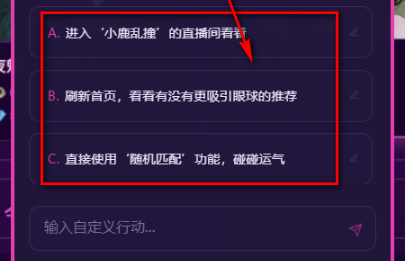

你以为 moku 只是翻热榜看故事？其实它还藏着这 5 个冷门玩法
把 moku 翻了一周底朝天，发现大多数人打开就翻热榜第一名就走——搜索框、评论区、题材横滑这些地方，藏着官方根本没教的小技巧。
我第一次打开 moku 的时候——从朋友发的官网链接进去的——就是标准的"小白用户路径"——首页热榜滑到底，点第一名，开始看，看完就退。前后没超过五分钟。
第二次打开，我心想热榜那本是不是真的好？就往下翻了翻，翻到第五名发现它居然是个 50 万字的仙侠巨著——首页 Top 5 里混着这么大的本，我第一次玩的时候直接点了第一名，根本没注意旁边那几个"短篇""微故事"标签。
然后我又翻了一周——第一次从官方下载装好应用到现在。翻到搜索框、翻到题材分区、翻到评论区……发现 moku 其实藏了不少东西，大部分人不会注意。官方介绍里只教了"怎么打开""怎么选本"，但没说"怎么选到真正适合你的本"、没说"怎么避开那些 AI 续写很生硬的烂本"、没说"怎么发现新上的冷门好本"。
下面这 5 个玩法，都是我实打实挖出来的，每一个都真有用。
搜索框不只是搜名字——搜标签关键词找官方精选
首页顶部那个搜索框，绝大多数人只会输剧本名或者作者名。其实它能搜的远不止这些。
你试一下搜"大赛"——会出来一批带"官方推荐""获奖"标签的剧本。这些是 moku 官方办的剧本创作大赛获奖作品，作者本身就有写作功底，AI 续写的时候也会更自然。我试过好几本，分岔密度明显比普通热榜本高，有的甚至在中间突然跳出一个我完全没想到的选项。
搜"获奖"同理，还可以直接搜题材+风格的组合词——"仙侠 虐恋"、"宅斗 爽文"、"穿越 改命"，比在分类页里一层层点进去快得多。分类页是按热度排序的，搜索结果可以切换按评分或者时间，想找新上的好本就切时间排序。
评论区才是选本的真相源——扫关键词比看评分靠谱
热榜前五里几乎不会有差本，但"不差"和"适合你"是两回事。有的本评分 9.5 但分岔极少，AI 续写到后半段基本就是单线推进，体验像看一本线性小说——那还不如去起点。
我现在选本的流程是：先在热榜里挑题材感兴趣的，点进详情页，不看评分，直接扫评论区前 20 条。找这几个关键词：
- "分岔多"——这个本的剧情分支密度够，不会走成单线
- "AI 续写自然"——说明 AI 在这个题材上的表现不错，不会出戏
- "烧脑"——适合喜欢复杂设定的玩家
- "太短"——反过来想，如果你想练手、不想一次花几个小时，"太短"的评论反而意味着这个本节奏紧凑
如果扫完前 20 条没看到任何有用的关键词，基本可以 pass 了——要么是评论区人少，要么是大家都觉得没什么好说的。
题材横滑往左滑——有 v1.0.1 才加的冷门题材
首页中部有一排横滑的题材分区卡片，仙侠、宅斗、穿越、奇幻、现言、悬疑恐怖、娱乐圈、末日生存、校园、同人——默认显示的是热门的前几个，往右滑能看到后面的，但很少有人往左滑回去看最开头的。
我往左滑的时候发现，v1.0.1 更新专门补了一批冷门题材的标签——我是翻了moku文档才确认这是官方更新重点——比如专门的"灵异怪谈"分类、独立出来的"校园青春"、还有"恋综"这个细分品类。这些分类里的剧本虽然数量不多，但作者往往是带着特定受众意识在写，不会乱开坑。
如果你翻腻了热榜那几个仙侠和宅斗，往左滑一下试试——冷门题材里经常能挖到小而美的本，完整体验一遍的感受反而比追着 50 万字巨著跑轻松多了。
预设行动按钮当剧情试金石——先按按钮感受分岔密度
每次剧情推进到一个节点，AI 会跳出一排预设的行动按钮——"拔剑应战"、"暗中观察"、"逃跑"、"求饶"之类的。大部分人要么随便点一个，要么跳过按钮自己打字输入。
我后来发现这些按钮根本不是给你"选一个剧情"用的——它们是用来测这个本分岔密度的。如果 AI 跳出的按钮超过 5 个、而且每个按钮指向的剧情走向差异很大（比如一个是打、一个是逃、一个是和对方谈判），说明这个本分岔设计得好，AI 续写的分支树比较密。
反过来，如果每次只跳出 2-3 个按钮、而且差异很小（比如两个都是"拔剑应战"只是措辞不同），那不管这个本评分多高，后期大概率会走成单线。
所以我现在第一次玩一个新本的流程是：先不自己打字，连续按 3 轮预设按钮，观察每轮按钮的数量和差异。如果按钮丰富度够，再开始自己输入。按钮太单一的，直接退。
热榜前 5 里也有雷——别上来就点第一名
这个是我交过学费才知道的：热榜 Top 5 不是按"适合新手"排的，是按综合热度排的。里面可能混着 50 万字的年度大戏，剧情线铺得七八个平行世界、五六个人物群像，第一次玩很容易跟不上。
我推荐第一次玩的时候按这个顺序挑：
- 先看简介里有没有明确写"短篇""微故事"——有就优先选
- 人物数量不超过 3 个——从简入繁
- 题材从你平时爱看的开始——仙侠读者从仙侠本切入，乙游玩家从恋综/同人切入，进入状态最快
第一次玩 moku 的目标不是"体验完一部巨著"，是"完整体验一遍分岔剧情是什么感觉"。先短后长、先热后冷，这句话不是官方 slogan，是真的有用。

最后说一个坑：豆子高峰期延迟
豆子是 AI 续写剧情时消耗的代币，用尽了就得充。我第一次充的时候刚好是周五晚上，支付完成后等了十分钟豆子没到账，以为被骗了，差点去投诉。
后来才知道这是正常现象——晚上和周末是高峰期，处理延迟可能到 10~15 分钟。等了超过 15 分钟还没到的话，进应用内"我的"页查订单状态，如果显示"已支付/处理中"就继续等；如果"没看到这笔订单"，大概率是支付渠道没回调，保存好支付截图找客服。
预防措施就两条：豆子快用完时提前充，别等紧急时刻才想起来；大额充值分多次小额充，万一有问题损失小。
尾声
moku 不是一个"打开看看"就能体验完的应用。它的大部分乐趣藏在"选本"这个环节——选对了本，AI 续写才自然、分岔才够密、体验才像真的在和 AI 一起写故事。
这五个技巧加起来五分钟就能上手，但能帮你避开 80% 的烂本、挖到很多别人没注意到的好本。把它用透的意思，不是说你要每个题材都玩一遍，而是说当你知道怎么选本之后，每次打开 moku 都能精准命中自己想要的那种体验。这款应用的资料我也在GitHub、Gitee和GitCode三个平台都做了同步，怕某个仓库访问慢的可以换着看。